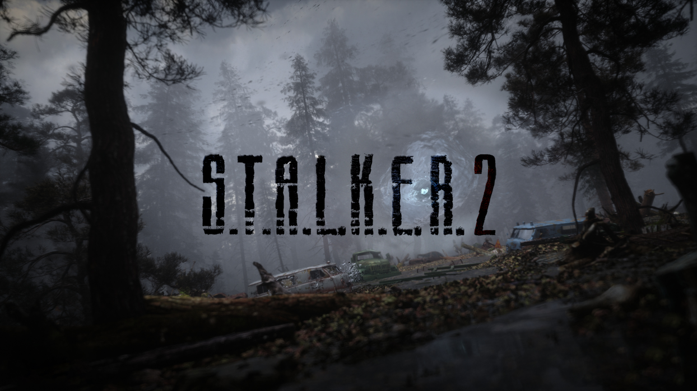

Heart of Chernobul
S.T.A.L.K.E.R.: Тінь Чорнобиля
«S.T.A.L.K.E.R.: Тінь Чорнобиля» (англ. S.T.A.L.K.E.R.: Shadow of Chernobyl) — шутер від першої особи від українського розробника GSC Game World, раніше відома як S.T.A.L.K.E.R.: Oblivion Lost. За межами пострадянського простору видавцем виступила американська компанія THQ. Дія гри відбувається в зоні відчуження Чорнобильської АЕС. Гра запозичує ряд термінів і образів з повісті братів Стругацьких «Пікнік на узбіччі» і заснованого на ній фільму Андрія Тарковського «Сталкер»; багато рівнів гри були створені на основі фотографій і документальних зйомок, зроблених на реальній Чорнобильській АЕС і в околицях. Відповідно до сюжету гри, в результаті нової катастрофи навколо електростанції з'явилися небезпечні «аномалії» і мутанти, а також цінні «артефакти». У Зоні діють «сталкери» — авантюристи, найманці і мисливці за артефактами, як одинаки, так і цілі збройні угруповання; головний герой гри, Мічений — один з таких сталкерів, що втратив пам'ять і намагається на шляху вглиб Зони з'ясувати, що з ним сталося.
S.T.A.L.K.E.R.: Чисте небо
S.T.A.L.K.E.R.: Clear Sky (укр. S.T.A.L.K.E.R.: Чисте небо) — комп'ютерна гра в жанрі шутера від першої особи з елементами рольової гри, розроблена українською компанією GSC Game World і випущена в Україні 29 серпня 2008. Видавцем в країнах СНД і Україні є GSC World Publishing, в іншому світі гру видає компанія Deep Silver. «S.T.A.L.K.E.R .: Чисте небо» це друга гра серії S.T.A.L.K.E.R., однак фактично є самостійним доповненням і приквелом до гри «S.T.A.L.K.E.R .: Тінь Чорнобиля» 2007 року. Ігровий рушій X-Ray, використаний в грі, був оновлений до версії 1.5 і став підтримувати DirectX 10.
S.T.A.L.K.E.R.: Поклик Прип'яті
S.T.A.L.K.E.R.: Clear Sky (укр. S.T.A.L.K.E.R.: Чисте небо) — комп'ютерна гра в жанрі шутера від першої особи з елементами рольової гри, розроблена українською компанією GSC Game World і випущена в Україні 29 серпня 2008. Видавцем в країнах СНД і Україні є GSC World Publishing, в іншому світі гру видає компанія Deep Silver. «S.T.A.L.K.E.R .: Чисте небо» це друга гра серії S.T.A.L.K.E.R., однак фактично є самостійним доповненням і приквелом до гри «S.T.A.L.K.E.R .: Тінь Чорнобиля» 2007 року. Ігровий рушій X-Ray, використаний в грі, був оновлений до версії 1.5 і став підтримувати DirectX 10.
S.T.A.L.K.E.R. 2: Серце Чорнобиля — некстген-продовження видатної франшизи від GSC Game World, яку тепло зустріли гравці та критики. Пориньте у Чорнобильську зону відчуження сповнену небезпечних ворогів, смертельних аномалій та потужних артефактів.
«S.T.A.L.K.E.R. 2: Серце Чорнобиля» використовує весь потенціал рушія Unreal Engine та технологій фотограмметрії для створення неймовірно реалістичної та вражаючої графіки, покликаної стерти межу між гравцем і світом по той бік екрану. Покращена система штучного інтелекту кидає виклик навіть досвідченим сталкерам, заохочуючи шукати нові унікальні тактики боротьби з різноманітними суперниками. Технологія симуляції життя A-Life 2.0 дозволить відчути себе частиною цілісної екосистеми, де дії гравця матимуть неочікувані та глобальні наслідки.
Більше інформації
Серцебиття Чорнобиля посилюється та лунає навкруги. Зона знов чекає на сталкерів, готових поринути у нелінійну пригоду в моторошному відкритому світі східноєвропейського постапокаліпсису.